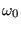
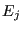
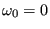
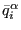
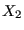
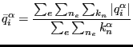

In the case of static calculations with face-to-face penalty contact the displacement increment  in each iteration is scaled with a scalar in order to get better convergence. is determined such that the residual (i.e. external force minus internal force) of the scaled solution  is orthogonal to the displacement increment:
|  | (451) |
Now, the residual for  is known from the previous increment, and the residual for  is known from the present increment. In between a linear relationship is assumed (cf. Figure 143), which yields the value of without extra calculations. With the *CONTROLS card the user can specify a value for  (default: 0.25) and (default: 1.01).